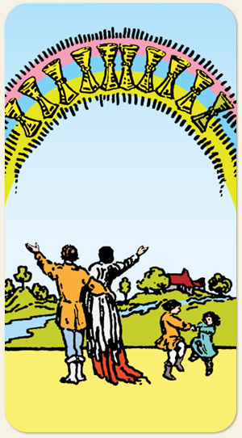

Realização mais felicidade, completude, viver a vida com amor e generosidade, ver o mundo de forma mais colorida, a ideia de que viveram felizes para sempre e que tudo valeu a pena.
Positivo: Alegrias, bênçãos, positividade, alegrar-se com coisas simples, sentimento de dever cumprido, a bonança depois da tempestade, um final feliz, planos espirituais elevados, a crença em um lugar melhor.
Negativo: Uma cena maravilhosa, porém, falsa. Algo que só existe de fachada, viver no País das Maravilhas, ilusão profunda, um pote de ouro de tolo, uma falsa alegria, algo que tinha tudo para dar certo mas teve um final trágico, uma história com um final triste, frustração por ter tentado ser feliz e não ter alcançado o que buscava.
Símbolos: Arco-íris, Campo, Família reunida.
Cores: Cor, Cor, Cor.